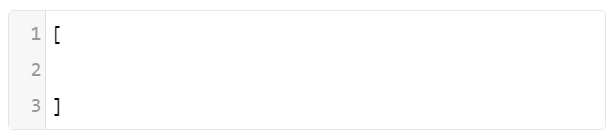
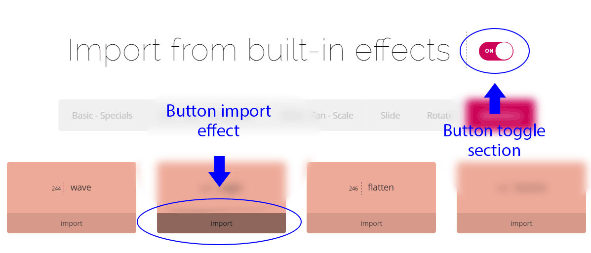
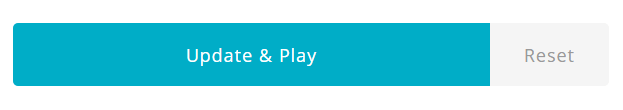
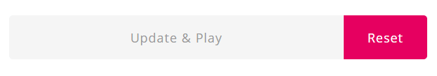
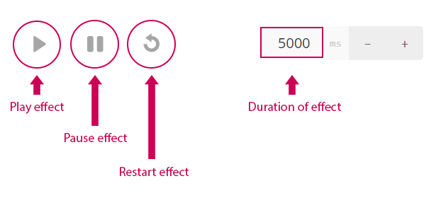
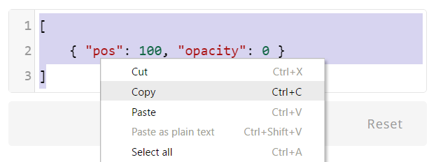
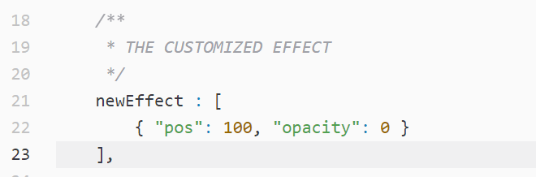

Create your own effect easier than ever. You just need basic knowledge off CSS and JSON syntax, even you don't need to know Javascript.
CSS effect is an animation include one or many transitions. CSS effect in Ruby-Slider have JSON array syntax (view JSON syntax at here).
1. Create
The new effect is created by the empty content editor :

Or import content from the built-in effects :

2. Update
To update and preview the new effect with the content of editor, press "Update & Play" button.

To restore the content in the last update, press 'Reset' button

The default keyframe with position 100 :
{ "pos": 100, "x": 0, "y": 0, "z": 0, "scale": 0, "skew": 0, "rotate": 0, "rotateX": 0, "rotateY": 0, "rotateZ": 0, "opacity": 1 }
The Ruby Animation automatically insert the default keyframe-100 into the animation if without keyframe-100 in the animation, to save size of "rubyanimate.js" file.
Direct control on effect-demo :
Control on the duration-track :
Buttons control the demo-effect :
1. The customized effect is tested and run successfully, select and copy the contents of effect on the editor.

2a. Open your text editor (SublimeText, Atom,..), named for the new customized effect (ex: "newEffect"), and past the contents of customized effect in about 21 line-numbers.

The RubySlider will have new effect with name "newEffect". All RubySlider can use that effect.
2b. If you only want the current RubySlider use the customized effect, you insert the customized effect in "rubyAnimateKeyframes" object-option when setup options :
$('.rs01').rubyslider({
...
rubyAnimateKeyframes : {
newEffect : [
{ 'pos': 100, 'opacity': 0 }
]
}
});